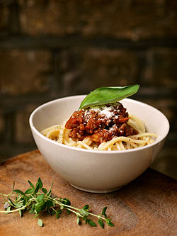

Spaghetti with nutty Bolo

Description
You like pasta but a normal bolognese is way too boring? Lucky you! The solution is right ahead. A tasty, nutty, vegan bolognese variant for the long-awaited variety in your pasta game
Ingredients
- 500g vegan spaghetti
- 2 red onions
- 2 carrots
- 100g celeriac
- 2 tablespoons extra virgin olive oil
- 12 pitted kalamata olives
- 100g walnut kernels
- 2 garlic cloves
- 2 tablespoons tomato paste
- 1 teaspoon sugar
- 200ml vegtable broth
- 2 cans of chunky tomatoes
- 1 teaspoon dried oregano
- 1 teaspoon of dried thyme
- 1 teaspoon of sweet paprika powder
- salt
- black pepper
- half a bunch of basil
Steps
- Peel the onions, carrots, and celery and dice into small cubes of about 5 mm.
- Heat the olive oil in a large pan and sauté the diced vegetables over medium heat for about 4 minutes.
- Meanwhile, roughly chop the olives and walnuts. Add both to the vegetables in the pan and sauté for another 2 minutes.
- Peel and finely chop the garlic, then stir in together with the tomato paste and sugar. Fry over a high heat for 1 minute until lightly caramelized.
- Stir in the vegetable broth, canned tomatoes, oregano, thyme, paprika, and a pinch of salt and pepper. Bring to a boil, cover, and simmer over medium heat for about 15 minutes. Stir occasionally.
- In the meantime, bring salted water to a boil in a large pot and cook the spaghetti according to the package instructions until al dente.
- Rinse the basil, shake dry, and roughly tear the leaves.
- After the sauce has cooked, remove the spaghetti from the boiling water, add it to the pan while still wet, and mix it into the Bolognese sauce.
- Season generously with salt and pepper, adding a little pasta cooking water if necessary to make everything a little silkier.
- Fold in the basil and serve the Bolognese spaghetti in deep plates. Drizzle with a few drops of olive oil and top with freshly ground pepper to taste.
Home